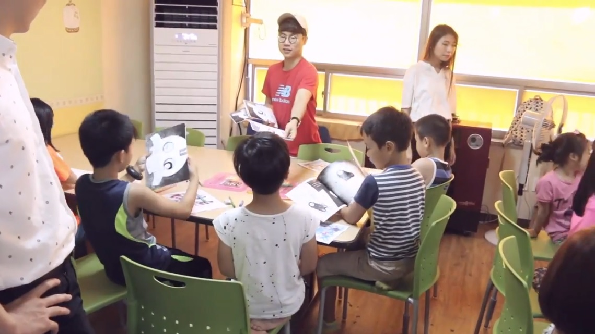
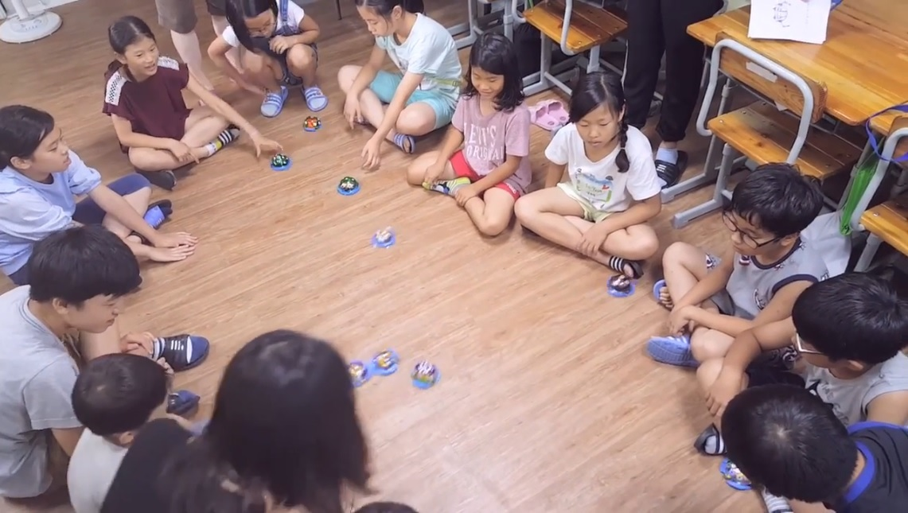
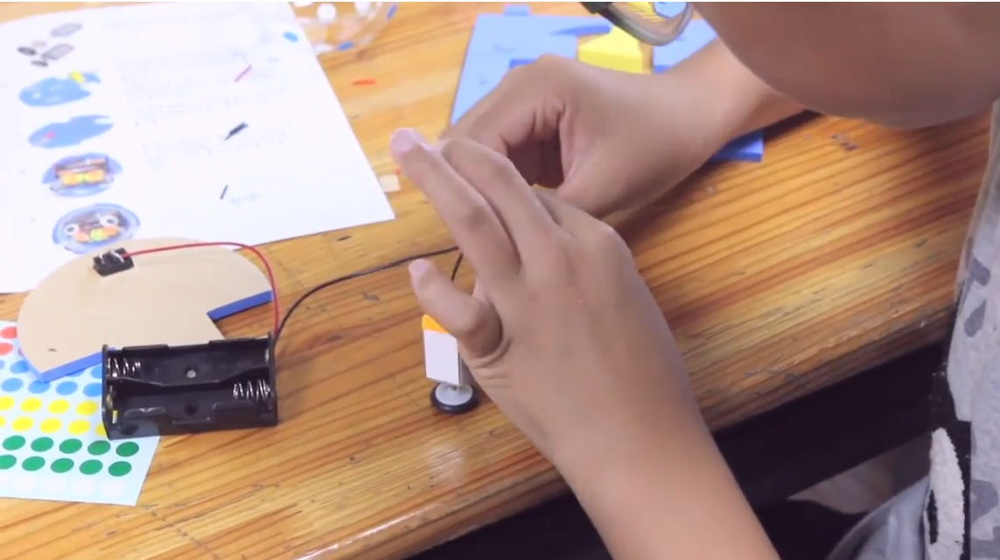
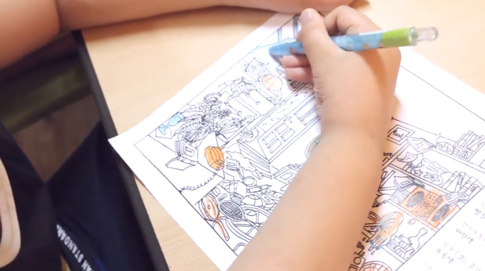

My role: class planning, teaching
Collaborator: Aram Jang, Soyoung Kim, Younji Shin, Hyun Jo, and Ilhwan Hwang
A volunteer project with students of the Korea National University of Arts.
It aimed to raise elementary students' interest in and understanding of science through a picture book, drawing practice, and toy making.
For a month before the class, each member prepared their own class content.
Drawing on my science communication experience, I proposed a motorized toy that actually moves and wrote explanations of basic electromagnetism.
After preparation, the whole team rehearsed the class, including drawing and hands-on activities.




The team visited the Charmsarang and Haemaji Regional Children's Centers in Pohang.
Each class took about 4 hours, and the team met about 40 children in total.
The class taught basic electromagnetism concepts such as current, voltage, resistance, and electrons.
Children filled in the picture book and made toys with diverse styles and movements.
By the end, children used what they had learned to explain how their toys moved.